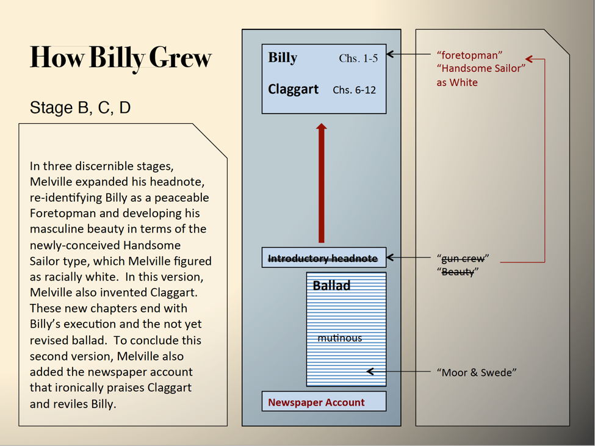
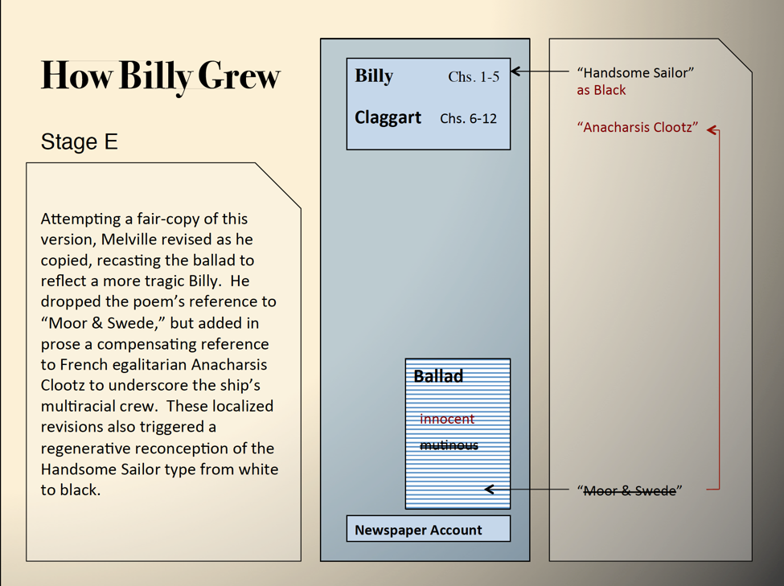
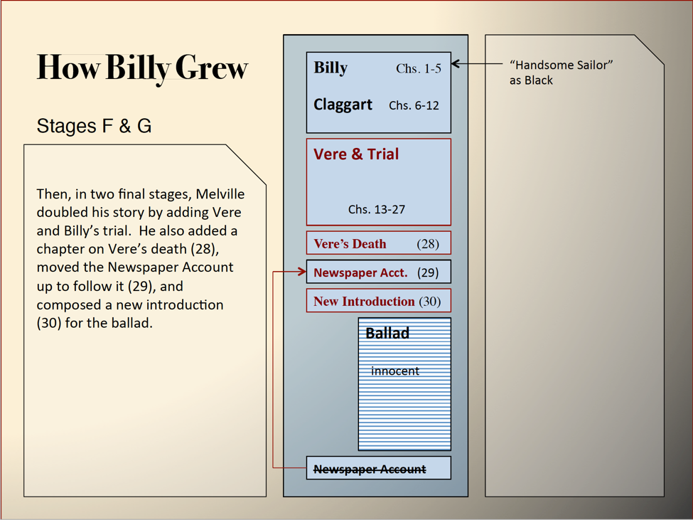
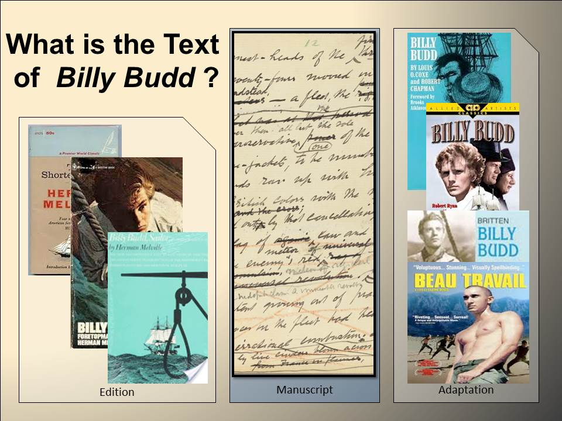

How Billy Grew
The following storyboards lay the foundation for part of a projected visualization of the growth of Billy Budd from poem to novella. In the final product, users will be able to select any of the eight stages of composition depicted here, inspect individual leaves associated with sub-stages of revision within a sub-stage, and drill deeper into specific revisions on a leaf and their revision sequences and narratives.





- VERSIONS OF BILLY BUDD: A Fluid-Text Edition
- Modes of Digital Editing
- Collations
- Billy Budd: Manuscript Base Version v. MEL Reading Text
- Billy Budd: 20th-century Reading Texts
- Project Ideas